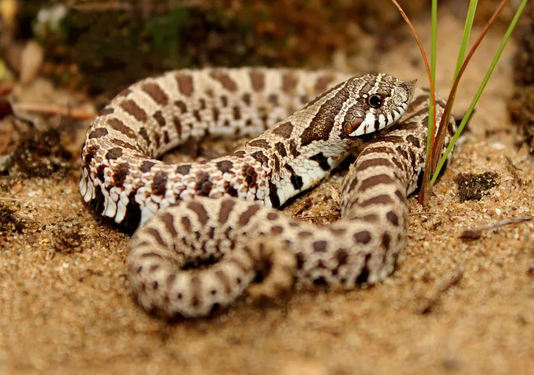

爬行动物 · 动物界
猪鼻蛇 Heterodon nasicus

北美草原上的小型蛇类，鼻端上翘像猪鼻，受惊时会翻肚装死、张口吐舌，后沟牙带轻微毒液但对人无害。
- 分类
- 门脊索动物门纲爬行纲目有鳞目科游蛇科属猪鼻蛇属
- 栖息环境
- 北美洲中部的沙质草原、半荒漠、灌丛与农田边缘，喜疏松沙土
- 地理分布
- 美国中部至墨西哥北部，以及加拿大南部的草原地区
- 保护级别
- IUCN 无危（LC）
物种志
猪鼻蛇体长 38–65 cm，雌蛇明显大于雄蛇，体重 30–80 g。体色沙黄至浅褐，背部和体侧排列深褐色斑块，腹部底色浅并带黑色斑；鼻端明显上翘呈铲状，用于在沙土中掘洞，头部短钝，鳞片具棱。
它们分布于美国中部至墨西哥北部和加拿大南部，栖息于沙质草原、半荒漠、灌丛和农田边缘。猪鼻蛇多在白天活动，食物以蟾蜍和蛙为主，也吃蜥蜴、小型啮齿类、鸟卵和昆虫。受到威胁时，它会鼓起身体、嘶嘶作响，甚至翻过身来张口吐舌装死。繁殖期在 4–6 月，雌蛇产卵 4–23 枚，孵化约 50–60 天。其后沟牙可分泌轻微毒液，用于麻痹蟾蜍，对人体通常无害。
形态与习性
- 食性蟾蜍、蛙、蜥蜴、小型啮齿类和鸟卵
- 体长38–65 cm，雌蛇更大
- 体重30–80 g
- 繁殖4–6 月交配，产卵 4–23 枚
- 寿命约 15–20 年
- 防御鼓胀身体、嘶叫，或翻肚张口装死
趣味知识
- 猪鼻蛇上翘的鼻端像猪鼻子，用来在松软沙土里拱土掘洞。
- 受惊时它会翻过身、张开嘴、吐出舌头一动不动地装死。
- 它属于后沟牙毒蛇，毒液主要用来麻痹蟾蜍，对人几乎没有危险。